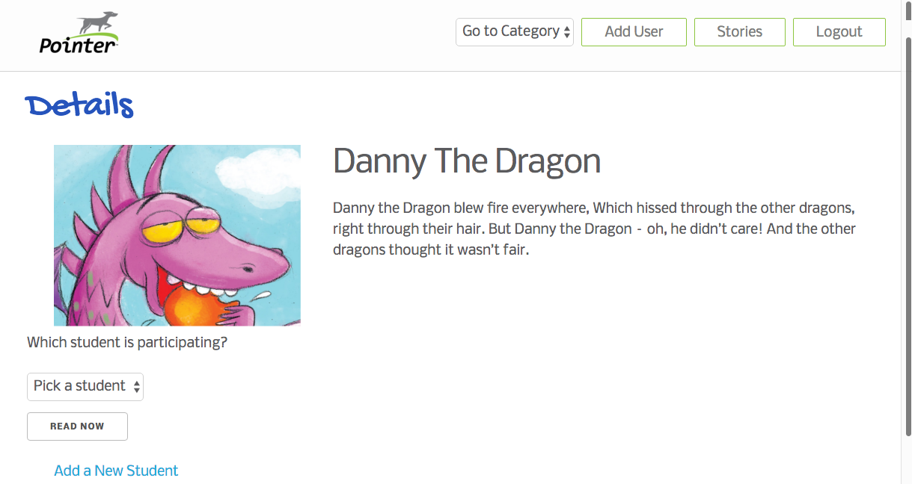
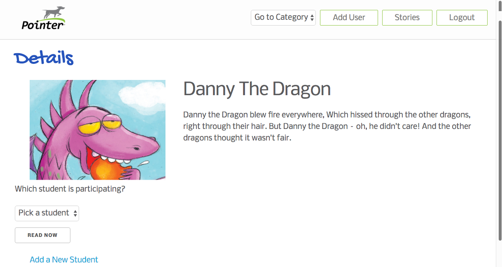

About Me
Hello, I'm Jen. I'm a front-end developer with a background in writing and digital marketing. One day, I woke up and decided to dive head first into coding. Thanks to my rigorous 12-week bootcamp experience at The Iron Yard (Austin), I'm now happily immersed in HTML, CSS, Javascript and beyond. Check out some of my projects here.
Highlights
- Graduated from The University of Texas at Austin with a B.A. in English and philosophy.
- Worked as a writing consultant and copywriter.
- Experienced in all facets of digital marketing, including content, SEO/SEM, ads and social media.
- Survived immersive coding bootcamp; leveled up skills in HTML, CSS, JS, frameworks/libraries, Node and Agile software development.
- Passionate about using technology to solve pressing problems and drive change.
Notable Projects
Lilith Fund App
For my final project at The Iron Yard, I created an app for a local nonprofit called The Lilith Fund that helps admins and volunteers run hotline shifts, as well as store and access caller information ideally on a secure server. Admins and volunteers have unique logins and are routed to either an Admin Dashboard or Volunteer Dashboard.
Admins are able to save caller information to the database, oversee a shift calendar, and manage resources. Volunteers are able to sign up for shifts, manage their current shift, and save shift details to the database.
Build Summary
- Javascript, Backbone, React, CSS, Node and Express


Pointer App
I worked with my front-end classmates and our instructors on an app for a local client that helps children learn to read. Our client, Ruben, was inspired to create this app after teaching his own daughter to read and wanting a way to connect the audible and textual elements of a story.
The app highlights words as a reader moves through the story, allowing children to easily visualize every word spoken aloud. Parents or teachers are able to select a story and the child who is reading it. The app tracks your progress on a story and alerts you when you've finished it.
Build Summary
- Javascript, Backbone, React, CSS, Node and Express
 


BestFeed
BestFeed is a (very meta) collection of the best 'Best Of' lists from around the Web. I worked with my front-end, back-end and design teammates on an app that lets users submit and vote for their favorite 'Best Of' lists, including everything from 'The Greatest Books' to 'The Top 10 David Letterman Top 10 Lists'.
This project is a work in progress, and our group is currently meeting for continual improvements.
Build Summary
- Javascript, jQuery, Backbone, HTML, CSS and Ruby on Rails